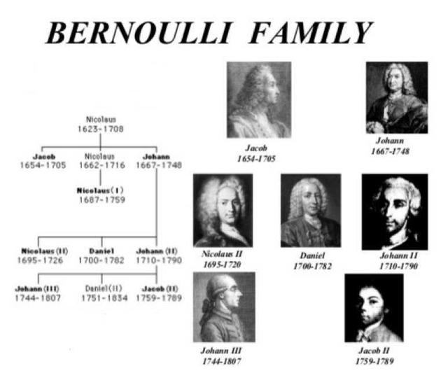
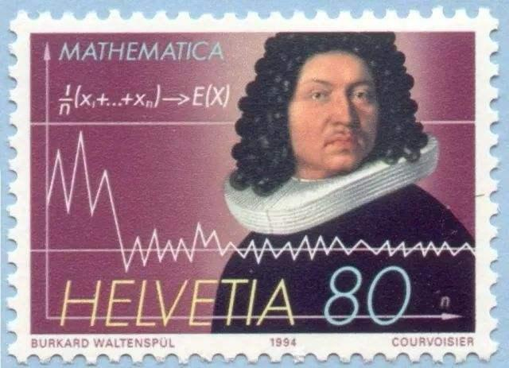
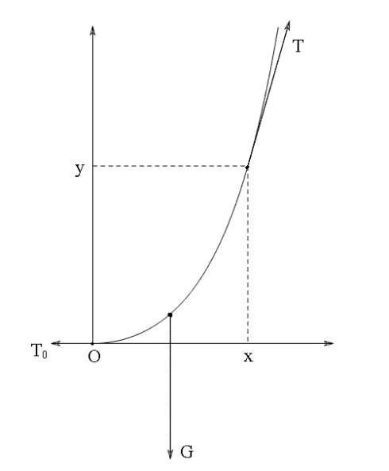
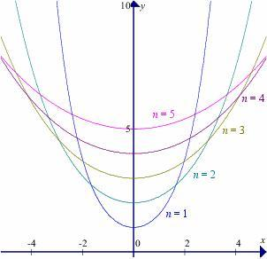
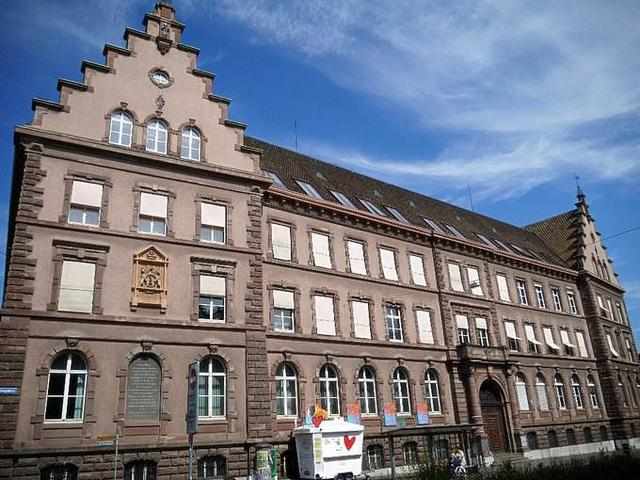
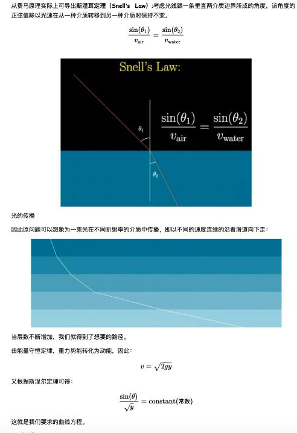
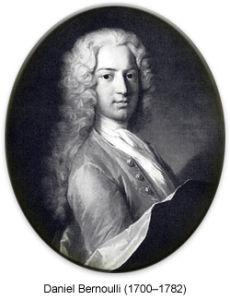
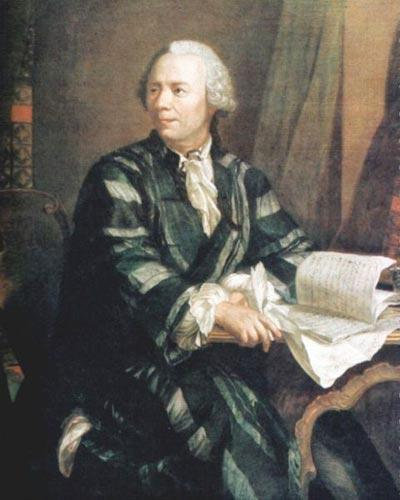

堪比宫斗的伯努利兄弟之争，推动了微积分的完善与发展～
应该没有哪个家族能够和伯努利家族一样，出过如此多的科学家。伯努利家族最辉煌的时候在3代人之中就产生了8位科学家，在微积分的发展和应用上扮演领导角色，推动整个世界科学史翻过划时代的一页。后代有 120 多人在各大领域都有出色的造诣。除了诞生如此多的科学家被人们所津津乐道之外，伯努利家族最为数学界知名的还是伯努利兄弟之争，这场持续近 30 年的纷争，可以说是数学界唯一的掀起如此大规模由一对兄弟发起的论战。

雅各布第一·伯努利和约翰第一·伯努利（以下简称雅各布、约翰）曾是一对非常要好的兄弟，他们的父亲老尼古拉曾要大儿子雅各布学法律，要小儿子约翰去学经商。但约翰在雅各布的带领下进行反抗，去学习医学和古典文学。约翰于1690年获医学硕士学位，1694年又获得博士学位。但他发现他骨子里的兴趣是数学。

他跟随自己哥哥学习数学，当时雅各布已经是非常有名的数学家，他们也曾共同完成一系列卓越的研究成果，发表于当时有名的权威杂志，自视甚高又天性好强的约翰对于哥哥的光环非常嫉妒，他开始模仿哥哥的一系列行为，包括游学的路线、研究的方向等，他想要在自己哥哥所擅长的领域超越哥哥，不想活在哥哥的风光之下。

约翰伯努利
所以说天才家族也有自己的烦恼啊，各个都认为自己是是天才，自然不想屈居他人之下。
大约翰 13 岁的雅各布自始至终将约翰视作自己的学生，雅各布在写给莱布尼茨的信中，他明确声明，约翰的全部数学基础都来自他的馈赠。

雅各布
但约翰却并不这样想，他觉得他们两个人应该是一种平等的位置，甚至自己比哥哥还更要强。他曾在信里说道：“你不会相信，我这个哥哥是多么名不副实。他恨我，迫害我，试图摧毁我….他看上去对我温和友好，心里却暗藏毒药。”
在这段兄弟关系中，两个人都包含私心，当时，创办于莱比锡的德意志第一份专业科学期刊《教授学报》是两人刊发成果的主要阵地，但约翰却并没有办法与《教授学报》直接沟通，一切都要靠哥哥作中介。由此引发的不愉快接二连三：约翰把一篇文章寄给哥哥，刊发后却发现哥哥在结尾自作主张地加段落，并附署名；出于难以说明的原因，哥哥有时并不会将莱比锡方面的消息转告约翰。

教授学报
而雅各布似乎从未考虑过弟弟的感受。他曾把学术上的合作比喻为两个人去两个不明地点旅行，每个人都尽可能地带回东西，但没有人能拿到另一个地点的一切。因此，面对同样的问题，即使两个人都以自己的方式找到正确的解决办法，任何人都不该得到所有荣耀。
种种的行为像火柴一样越堆越高，最终被火星点燃，引发熊熊烈火。
两个人之间的第一次分歧是因为悬链线问题。我们知道，达芬奇不仅仅是画家、还是数学家、物理学家和机械工程师，他的世界名画《蒙娜丽莎》可以说是被世界人民熟知，也成为了经典的恶搞和cosplay对象。而《蒙娜丽莎》也引发了达芬奇深深的思考，如果蒙娜丽莎戴了项链，固定项链的两端，使其在重力的作用下自然下垂，那么项链所形成的曲线房产是什么？

这便是有名的悬链线问题。这个问题困扰了数学家们一个多世纪。即使是伽利略都没有能够解答出来。
时隔 170 年后，雅各布在期刊上建议数学界重新对悬链线问题展开研究。但是雅各布花费了整整一年的时间，还是毫无进展，而弟弟约翰仅仅花了一个晚上的时间，就得到了答案。
约翰成功地用微积分解决了问题，约翰将问题转化为求解一个二阶常微分方程，解此方程并适当选取参数，即可得到悬链线，从而证明悬链线是一个双曲余弦函数。这次证明了悬链线问题让约翰成为了数学界新秀。

自己提出的问题被弟弟破解，这本已令雅各布感到尴尬，而约翰抓住这个机会，四处靠贬损哥哥来抬高自己，则激化了二人的矛盾。
不过这个时候两个人还并没有完全闹掰，还经常在一起互相讨论研究，经常一起发表论文，不过不再合著。后来，雅各布对风中船帆的形状问题产生兴趣，他寄给弟弟一个曲线的微分方程 （d2x ：dx = dy3） ，并要求从中得出能表达曲线性质的文字或代数方程。
约翰提议用悬链线来证明，但是被雅各布否决，他认为还要考虑风影响帆的多种情形，遭到了约翰的嘲笑。后来，在去巴黎游学的时候，雅各布终于发现，的确可以用悬链线来证明。

各种不同的悬链线
他想要戏耍一下约翰，他只寄给约翰一个方程式，并未言明曲线性质，约翰一看就发现这是一个悬链线，他认为自己那个愚笨的哥哥肯定没有发现。
1692年4月，约翰兴冲冲地表示，自己的哥哥无能，所以只能自己来代替他完成这个工作了。然而在约翰兴冲冲证明的时候，雅各布其实早已经在3月份就给期刊投稿，最终在 5 月发表。
约翰自以为这次便可以彻底把哥哥踩在脚下，哪知道最后被哥哥戏耍一通，自此，两个人彻底决裂。
约翰认为如果我在巴塞尔大学数学系的职位比雅各布高，那么就一定能证明，我比雅各布厉害！1695年，弟弟约翰向巴塞尔大学数学系，提交了职位申请，他满心以为凭借自己在数学上的名声，教授的职位绝对没问题！

巴塞尔大学
谁知道巴塞尔大学无情地回应：数学系有雅各布就够了，不需要其他人。
这下约翰的行为更加激怒雅各布了，雅各布越想越火，他决定盘点他的所有首次发现。他还写信给莱布尼茨，讲述他和约翰的生平以及他们早年的数学成就。他声称自己才是参透莱布尼兹微积分奥秘的第一人，约翰分享了他的果实。
雅各布的行为彻底激怒了早已对哥哥牢骚满腹的约翰，他给数学界所有大数学家发了邀请函，邀请他们公证，他们两兄弟究竟谁能解决最速降线问题，约翰规定答案必须在1697年1月1日之前寄出，后来在萊布尼茨的建议下，将期限延长至复活节。

莱布尼茨
为了制造声势，逼迫雅各布应战，他甚至还在街头张贴海报。由此两个人之间的论战达到了高潮，这就是数学界有名的伯努利兄弟“最速降线问题”之争。当然，除了他们之外，其他收到邀请函的数学家也没有闲着，也想试试。
最速降线也被称为摆线，指的是一个圆沿一条直线运动时，圆边界上一定点所形成的轨迹。最速降线问题是意大利科学家伽利略在1638年提出一个分析学的基本问题──在一个斜面上，摆两条轨道，一条是直线，一条是曲线，起点高度以及终点高度都相同。两个质量、大小一样的小球同时从起点向下滑落，曲线的小球反而先到终点。这是由于曲线轨道上的小球先达到最高速度，所以先到达。然而，两点之间的直线只有一条，曲线却有无数条，那么，哪一条才是最快的呢？这个问题的难处在于它并没有要求你给出一个极大值极小值，而是要给你求出一个未知函数。

约翰在发出挑战书时其实已经花费了两个星期算出了答案，然而雅各布也不是省油的灯，他也很快算出了答案。在收到雅各布的答案之后，约翰欢喜异常，认为雅各布的解法繁琐异常，没有自己的简洁明了漂亮。
约翰的解法是他借用了光学中费马的光程（或时间）最短原理，费马在1662年提出：光传播的路径是光程取极值的路径。这个极值可能是最大值、最小值，甚至是函数的拐点。 最初提出时，又名“最短时间原理”：光线传播的路径是需时最少的路径。
费马的光程（或时间）最短原理是最早具有变分法思想的数学原理。约翰将小球运动类比作光线的运动，那么，“最速降线”就是在光速随高度下降而增加（加速度恒为重力加速度 g）的介质里光线传播的路径。用这样的类比思想，约翰成功地算出了这条曲线就是前面提到的摆线。

论证过程
这其实有点投机取巧的意思，运用类比法。虽然漂亮表现出惊人的想象能力。却无法将其推广为抽象的规律或原理。
而雅各布的解法虽然繁复，却蕴涵了变分的思想，他首先假设小球沿着最速路径下滑，然后考虑：如果在某个时刻，小球的路线稍微偏离了最速路径，会发生什么情况？雅各布首先考虑所有微小偏离路径中使得时间最小的那个偏离。然后，雅各布用二阶导数的方法证明，为使小球继续走时间最短的路，它的路线的微分偏离量应该满足的方程，刚好是摆线所满足的微分方程。

雅各布的论证思路
后来欧拉从雅各布的解法中得到了启发，开创了变分学，变分学如今成为了微积分理论中最强大的工具之一。
而虽然约翰自以为得到了胜利，可是数学界的众位在比较了一下两位的论证过程之后，普遍站在了雅各布这边，因为雅各布的解法更具有一般性。最终，哥哥继续坐稳巴塞尔大学的教席，约翰却遭到排挤，被迫远赴荷兰。
在这场最速降线问题之争中，最有意思的就是，因为约翰是莱布尼茨的学生，所以为了给老师争口气，所以想拿这个问题去挑衅牛顿。当时的牛顿已经 56 岁，早已不再巅峰，而且沉迷神学多年，可是依然只用了一个晚上就解答了这个问题，并且匿名寄给了约翰。

牛顿
约翰还是认出了牛顿，说出了一句著名的话：“ 我从他的利爪认出了这头狮子 。
两个人之间的最后一次论战是在牛顿与莱布尼茨的微积分大战中，但是两个人都认为自己是微积分的发现者，而约翰作为莱布尼茨的学生，忠实地站在了老师这边。他编写了第一步微积分教材，还提出了链式法则以及洛必达法则。对微积分的发展做了重要的推动作用。不过因为他的偏见，推迟了牛顿力学在欧洲大陆的传播。
这次的较劲，裁判当然是莱布尼茨，约翰认为自己是莱布尼茨的学生，又为完善莱布尼茨微积分做了这么多努力，老师一定会认为自己的贡献最大。
谁知道莱布尼茨说：微积分的思路还只有少数人懂得，我还没听说比雅各布更懂我意思的人。

难过的约翰
莱布尼茨的话还是有一定的道理，雅各布指明了应当怎样把这一技术运用到应用数学的广阔领域中去， “积分”一词也是1690年他首先使用的。
当然，约翰人生最重要的一件事情还是赢过了自己的哥哥，那就是寿命。1705 年，51岁的雅各布预感自己命不久矣，在死于痛风并发症前，他在给雷布尼兹的信中写道：“如果我不久后将过世，我弟弟肯定会回到巴塞尔。他不会接受其他职位，他只想接替我的位子。”
果然，在旅途中听到哥哥死讯的约翰在回来之后辞去了荷兰格罗宁根大学数学教授，前往巴塞尔大学担任数学系教授。

雅各布·伯努利的墓碑，下方为雕刻师误刻的阿基米德螺线

雅各布墓碑的含义
可以说，雅各布和约翰几十年的论战，对于微积分的完善与发展起到了重要的作用，也推动了数学的极大进步，不过即使在雅各布死后，约翰依然还没有放下对自己哥哥的原因，在自己的信里和自传里还是有意无意的诋毁自己的哥哥。比如这数次论战中的唯一一次胜利，他在自传中如此写道：
“哥哥的努力没有结果。而我却幸运得多……我花了一晚上来钻研它……第二天早上，我满怀喜悦地跑到哥哥那儿，他还在痛苦地思索如何解开这个戈尔蒂之结。他茫无头绪，老是像伽利略那样认为悬链线是一种抛物线。打住！打住！我对他说，不要再试图证明悬链线是抛物线来折磨你自己了，因为这完全错了……这两条曲线完全不同，一条是代数的，另一条是超越的……我向他展示我的解决方案，并发现了引导我成功的方法。”
其实约翰的很多研究成果都是沿着哥哥雅各布的路线而得到的，1700年5月雅格布在《教师学报》上发表了关于等周问题的解，指出这条曲线是一个圆．1718年，约翰继续研究了等周问题，他沿着雅格布的思路，改进了雅格布的解法，1728年约翰又用雅格布的方法取得了一些进展，并且求得了另外几类曲面的测地线。
约翰一生好斗重名利，甚至连自己的儿子，他都不愿意相让，大约1739年或稍后，约翰出版了《水力学》，不过书的出版时间却有意标注为丹尼尔的《流体动力学》的出版日期- - - -1738年之前的1732年。他这样做的目的，似乎是要人相信丹尼尔的书是由抄袭他的书而来。

1724年，丹尼尔提交了一篇天文学论文，应征巴黎科学院的大奖。然而，他不知道，自己的父亲约翰也参加了这次征文，那次比赛的结果是，父子两人以压倒性的优势，并列获奖。
如果是一般的家庭，看到自己的孩子获奖，肯定比自己还高兴，然而对于儿子和自己同获荣誉，他表现的怒不可遏，他把儿子赶出家门，至死不愿意原谅儿子，遭受到如此重创的丹尼尔为了不让父亲生气，对于数学的热情降低，但是约翰却并没有罢休，他还有意进入丹尼尔所熟悉的流体力学领域，想侵夺孩子的荣誉。

作为一个重名利的人，约翰的长寿也给他带来了极大的痛苦，虽然自己的儿子已经极力避免和父亲的研究领域相重合，可成就还是超过了自己的父亲，又连续 10 次获得巴黎科学院的大奖，给约翰的心里带来了严重的打击，这个记录仅次于一个人。
偏偏这个人又是自己的徒弟，没有错，就是数学之王欧拉，欧拉连续拿了 12 次。看到自己的徒弟和儿子取得比自己高的成就，可以说是约翰最无法忍受的。
其实约翰的成就已经不低，他是18世纪分析学的重要奠基者之一，提出了三维空间直角坐标系，指出可以用以三个坐标变量为元的，三元方程表示空间曲面。对于微积分的发展也做出了重要贡献。
他还与同时代的110位学者，通过通信进行学术讨论，信件约有2500封，是重要的历史研究和科学研究材料。
虽然和自己的哥哥雅各布成就差不多，甚至弱一些，雅各布短短的学术生涯中，对微积分及概率论作出很多贡献，还是较早使用极坐标系的数学家之一。此外，数学中有许多以伯努利命名的术语，其中十几个都是雅各布的功劳。他的著作《猜度术》，是组合数学及概率论史中的重要经典著作之一，对于这门学科的发展产生了深远的影响，他在这部著作中给出的伯努利数有很多应用.。提出了概率论中的“伯努利定理”，这是大数定律的最早形式。然而因为约翰以及其他的关系，这本书直到去世 8 年后才发表。

猜度术
但是约翰的地位、名气远胜于自己的哥哥，因为他的儿子丹尼尔是数学物理方法的奠基人、“流体力学之父”，他的学生欧拉是数学界四大天王之一，而且欧拉一脉对数学界产生了深远的影响，欧拉的学生是拉格朗日，拉格朗日的学生则是柯西，柯西的学生是高斯，而高斯的学生则是黎曼。。。

欧拉
雅各布哪里来的这么好的运气啊，不仅死得早，学生里也没一个像样的，儿子也没争气的。。。当然，雅各布有一样东西是约翰一生也没有得到的，那就是父亲的偏爱，正是因为父亲的偏爱，让约翰重名利，性格偏激，并且一直想超越哥哥。
1701年，34岁的约翰写信给父亲，口吻像一个求爱而不得的、伤心的孩子：“我从没收到过父亲的信，这说明你更喜欢哥哥们，对我没有感情。我真的不值得像哥哥那样被关心么?……你不允许我过自己想过的生活，而我已经将自己置于神的引导下。所以，请你不要来巴塞尔带走我的名誉，并说你与之毫无关系。”
恩斯特·马赫曾如此评价约翰与雅各布：“他们一个有艺术家一般的直觉与激情，一个有批判性的思维纵深。这是天才的两面，如果结合在同一个人身上，就会造就伟大的科学家。可惜这两面分开了，那么冲突就是必然。”
伯努利家族成就最辉煌的三人